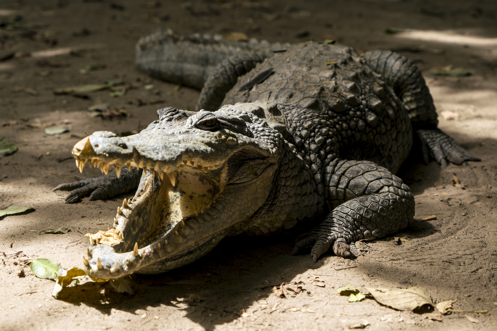

El caimán negro (Melanosuchus niger) es un reptil carnívoro de la familia Alligatoridae, llamado así por el color oscuro de su piel cuando es adulto. Vive en lagos, ríos de movimiento lento y otros hábitats de agua dulce de América del Sur, principalmente en la cuenca del Amazonas.
